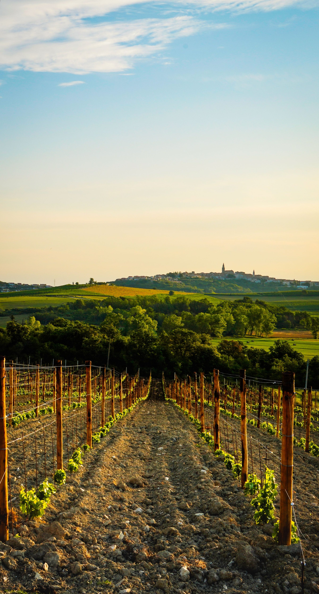
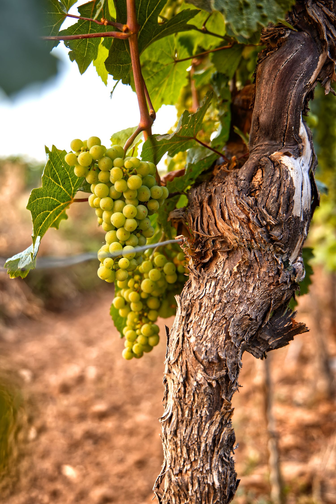
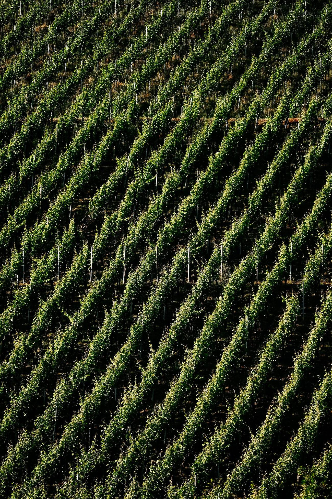
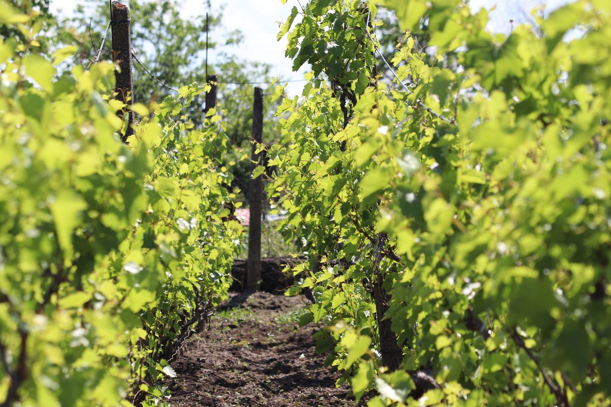

Sicily, from the inside. La Sicilia, dall'interno.
A volcanic island. Ancient landscapes. Mediterranean light. At its heart, Etna. Un'isola vulcanica. Paesaggi antichi. Luce mediterranea. Al suo centro, l'Etna.
For Veronica, Sicily is more than a backdrop. It is essential to how wine is understood, shared and remembered — a culture shaped by fire, sea and centuries of encounters between peoples who each left something behind. Per Veronica, la Sicilia è più di uno sfondo. È essenziale al modo in cui il vino viene compreso, condiviso e ricordato — una cultura plasmata da fuoco, mare e secoli di incontri tra popoli che vi hanno lasciato qualcosa.




Wine shaped by fire.Vino plasmato dal fuoco.
Volcanic soil, altitude and old, ungrafted vines give Etna's wines a mineral, saline character found almost nowhere else in Sicily — a landscape that shapes flavour as much as any winemaker does. Suolo vulcanico, altitudine e vecchie viti a piede franco danno ai vini dell'Etna un carattere minerale e sapido che si trova quasi solo qui — un paesaggio che plasma il sapore quanto e più della mano di chi lo produce.